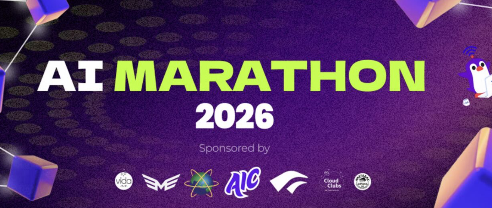

Chutes AI Partnership
International B2B Cold Outreach and Corporate Partnership Building.
Secure a long-term recruitment partnership with a US-based AI company to connect them with capable university talent.

01 // The Pitch
Bridging Campus to Global Tech
What started as a highly targeted cold email transformed into a reliable bridge between a credible university and a leading US AI company. I pitched our brightest minds as highly capable, employee-worthy talent ready to tackle real-world industry challenges.
Securing this international connection required writing a strong, focused, and engaging proposal. More importantly, it demanded absolute consistency between the bold promises we made and the tangible results we ultimately delivered.
02 // The Result
The Global Pipeline.
A single, well-crafted cold outreach paved the way for a long-lasting international connection. By prioritizing mutual trust and relationship-building, I successfully opened a direct recruitment pipeline that continues to benefit both my university peers and global tech innovators.
Return to Portfolio